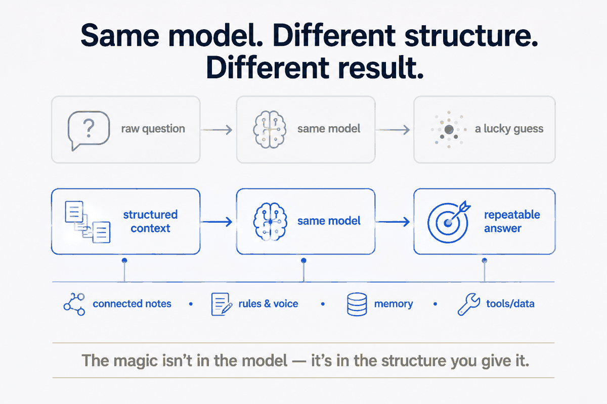
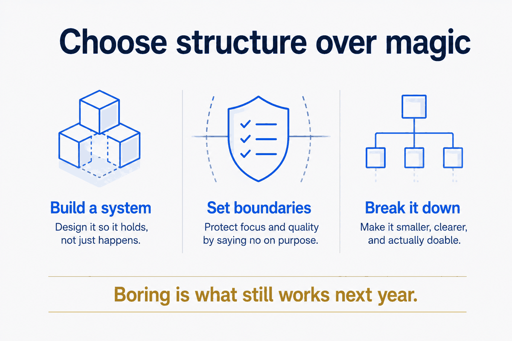

The name is an argument
I called this whole thing Structure Beats Magic, so I owe you the argument behind the name.
Here it is in one line: a clear plan, good habits, and organisation beat luck, sudden genius, and magical shortcuts — every single time. Magic is the exciting part that gets the credit. Structure is the boring part that does the work. And boring is what still works next year.
That sounds like a motivational poster until you look at where it actually shows up. It's not a mindset. It's a pattern you can see in crafts that look, from the outside, like pure inspiration — and it holds hardest exactly where you'd least expect it: in what you get out of an AI.
In storytelling, the outline comes first
Most people think great books arrive in a flash. An author stares out of a window, lightning strikes, and a world appears fully formed.
That's not how it works. Working writers use frameworks — beat sheets, story grids, act structures — that lay out pacing before a single scene is written. The Save the Cat! beat sheet is a page of slots: here's where the world turns, here's where hope dies, here's where it comes back. The magic is waiting for the perfect idea. The structure is knowing where that idea has to land for the story to hold.
Even a world that feels like pure enchantment is built on strict rules and a tight outline. The plot of Harry Potter makes sense because the scaffolding underneath it was never magical at all. The wonder you feel as a reader is standing on an outline you never see.
In music, the feeling rides on the frame
Great music lands like a spell. Underneath the sound, it's arrangement and maths.
The magic version is throwing sounds together and hoping a hit falls out. The structure version is a blueprint — a four-bar intro, a sixteen-bar verse, a chord progression that resolves where your ear already wanted it to go. Predictable patterns aren't the enemy of feeling. They're what lets the feeling land: because the frame is safe and expected, the one surprising note has somewhere to hit. Pull the structure out and the emotional part has nothing to push against.
In AI, the structure is the whole game
This is where the phrase stops being a nice observation and becomes the point of everything I build.
The magic isn't in the model. It's in the structure you give it.
Ask a raw model a raw question and you're hoping generic statistics guess well. Sometimes they do. Often they confidently don't, and you can't tell which time you got. That's the magic bet: type a wish, cross your fingers, take whatever comes back.
The structured version doesn't guess. It organises the information first — into clean data, retrievable sources, sharp questions — and then asks. This is the whole idea behind retrieval-augmented generation: don't make the model recall the world from memory, hand it the right passages and let it reason over those. A well-parsed question beats random generalisation every time. The model is roughly the same for everyone; what separates a toy from an instrument is the structure around it.
I know this because I live inside it. My own second brain is tens of thousands of connected notes, a decade of trips, a photo library turned into a queryable map, rules and voice written down as files the AI reads before it answers. When the output is good, it isn't luck. It's the structure paying out. Wipe the answer and ask again and I get something just as good, because the good part was never in the model — it was in what I gave it. Get the structure right and useful output stops being a lucky roll. It becomes repeatable. That's the entire difference, and repeatable is the word that matters.

The honest part
Structure only beats magic when the structure is actually usable.
A beat sheet you never fill in is worthless. A song blueprint with no song is a spreadsheet. A vault so elaborate that maintaining it eats the time it was meant to save has become the problem it promised to solve. Over-building is its own failure mode, and it wears the costume of virtue — it feels like diligence right up until you notice you're tidying instead of shipping.
So the claim isn't "more structure is always better." It's narrower and more useful than that: the reliable results come from the right structure, built to be lived in, not admired. AI reduces the effort of building and maintaining that structure dramatically — but it doesn't remove the judgement of what's worth structuring in the first place. That part is still yours.
How to choose structure over magic
If you want the reliable version of anything you make, the moves are unglamorous on purpose:
- Build a system, don't wait for the mood. Set the time; show up whether or not inspiration does. The mood follows the system far more often than it leads it.
- Set boundaries. Know your limits so the structure sustains you instead of burning you out. A system you abandon in a month lost to the one you kept.
- Break it down. Turn one big, vague goal into small, ordered, boring steps. Boring steps finish.

None of that is exciting. That's the whole point. The magic is what people notice. The structure is what makes the magic show up on a Tuesday when you don't feel a thing — and then show up again the Tuesday after that.
Structure beats magic. Not because magic isn't real, but because structure is the thing you can count on. The wonder is the shadow the structure casts.